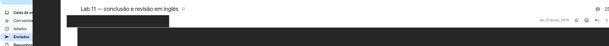
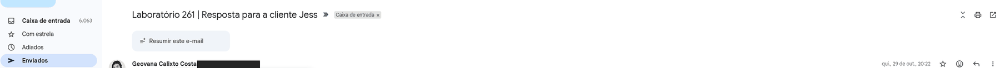
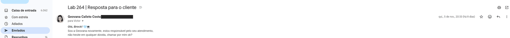
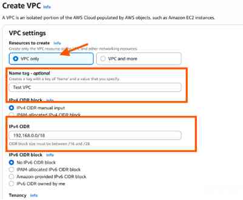

Labs 11, 261 e 264
Registros de práticas e comunicações sobre EC2, redes e conectividade. Capturas reais foram recortadas e protegidas; não comprovam avaliação ou aprovação.
Lab 11 — EC2
Em 27/10/2026, comunicação ao professor sobre a entrega relatada e uma repetição com dificuldade de acesso HTTP. Não é comprovante direto de entrega na plataforma.

Lab 261 — conectividade EC2
Em 30/10/2026, resposta enviada sobre investigação de conectividade e associação de Elastic IP.

Lab 264 — VPC e conectividade
Em 06/11/2026, resposta enviada sobre configuração de rede, sub-rede e EC2.

Recorte de uma tela de configuração inserida no e-mail: não é comprovação de criação da VPC.

As datas acima usam o cabeçalho original em horário de Brasília; na visualização usada para as capturas, o horário aparece quatro horas antes. As imagens documentam mensagens ou telas de prática, não notas ou avaliação.